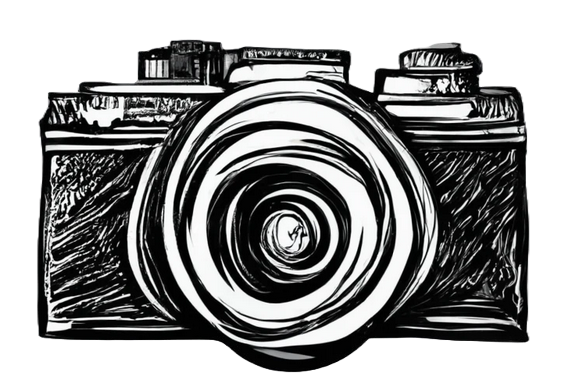
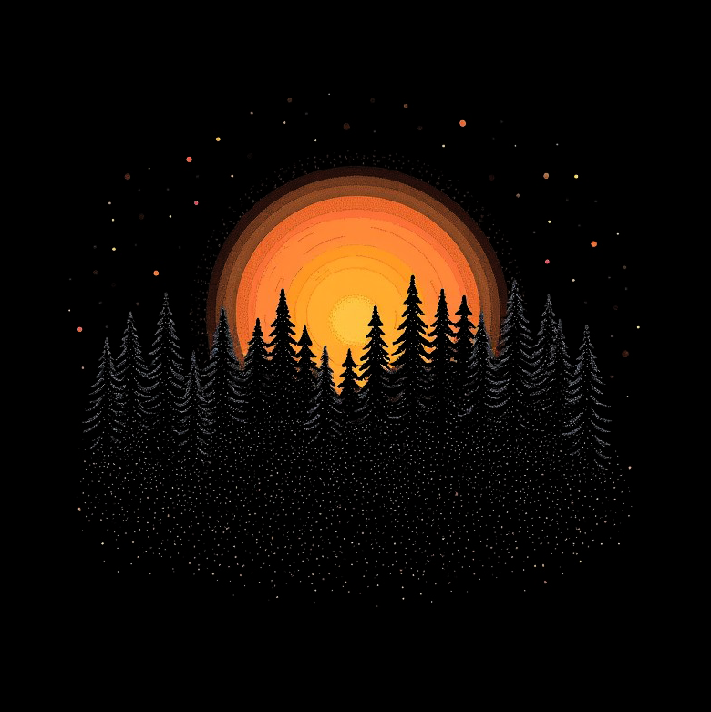

Une passion pour la photographie
Ma passion est née avec les appareils jetables, ces petits boitiers pleins de souvenirs. J’ai continué avec les premiers appareils photos numériques et n’ai jamais arrêté. Aujourd’hui mon appareil ne me quitte jamais, toujours prêt à faire la bonne photo au bon moment.
Sublimer le réel
Mon style est naturel et candide, proche du reportage. Je suis animé par l’envie de représenter la réalité sous sa plus belle lumière. Pas de studio ni de lumières artificielles plutôt de la patience et de la rigueur.
Travaillons ensemble !
Je suis installé à Toulouse et je suis disponible pour couvrir vos évènements culturels et sportifs. J’ai photographié de nombreux groupes et concerts. Je travaille avec différentes organisations dans l’optique de livrer rapidement des clichés pour les réseaux sociaux.